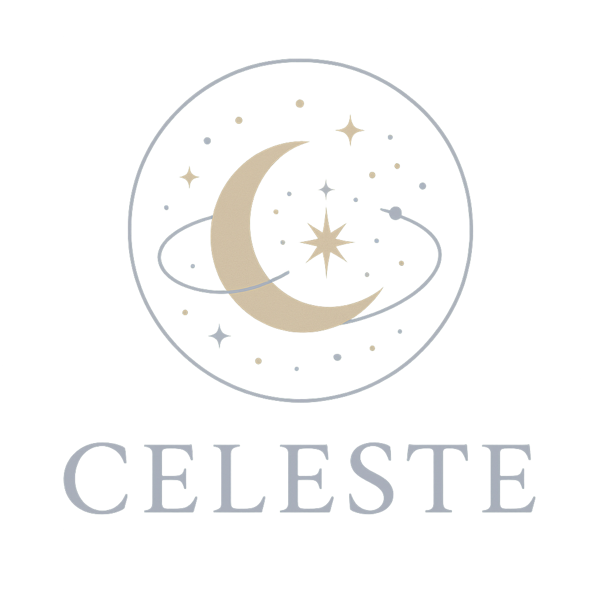

Celeste Flores
Tarot • Astrología • Rituales Sagrados
Soy argentina, guía holística y manifestadora de experiencias transformadoras. Con 8 años de recorrido en terapias alternativas y prácticas de bienestar, conecto con almas que buscan sanar, expandirse y vivir con propósito. Creo profundamente en la energía del universo, el poder astral y los rituales como portales para manifestar nuestra mejor realidad.
🌞 Revolución Solar
Lectura personalizada para revelar los desafíos, aprendizajes y oportunidades de tu nuevo año astral. Activá tu poder interior y alineá tus intenciones.
🌌 Carta Natal
Tu brújula cósmica. Explorá tu identidad, destino y los climas energéticos que guían tu camino. Conocé cómo fluir con lo que el universo tiene para vos.
🌠 Somos Estrellas – Taller
Descubrí los pilares de tu carta natal: elementos, signos, Sol y Luna. Con material personalizado, conectá con tu esencia desde el cielo con el que naciste. No necesitás conocimientos previos.
🌙 Hijas de la Luna & Espejo de Venus
3 encuentros sagrados para sanar la herida materna, reconectar con tu ciclo y activar tu poder femenino a través de la Luna, Venus y rituales con la naturaleza. Un viaje hacia tu energía más auténtica.